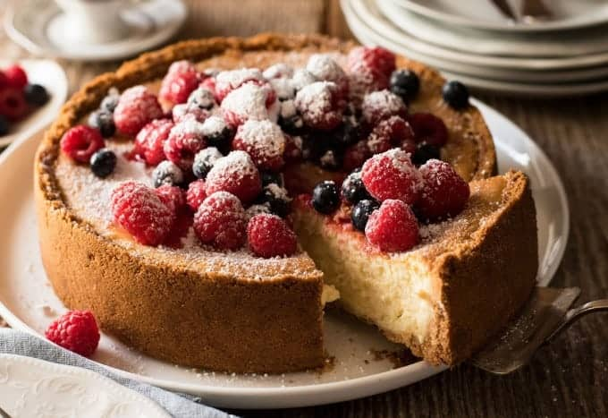

Baked Cheesecake

Description
A classic baked cheesecake that's easy to make and delicious.
Serves 12 - Total time: 1 hr 15 mins
Ingredients
- 200g plain biscuit
- 120g unsalted butter
- 500g cream cheese
- 2 tbsp plain flour
- 1 tsp vanilla extract
- 1/2 cup (125g) sour cream
- 1 1/2 cups (330g) caster sugar
- Zest of 1 lemon
- 3 eggs
- Mixed berries (strawberries, blueberries, raspberries etc.)
- Icing/powdered sugar
Steps
Preparation
- Preheat oven to 160C/320F (standard) or 140C/295F (fan/convection).
- Get a 20cm/8" springform cake tin. Turn the base UPSIDE DOWN.
- Butter lightly and place a square piece of parchment/baking paper on the base. Then clip into the springform pan - excess paper will stick out
- Butter and line the side of the pan
Biscuit Base
- Break up biscuits roughly by hand and place in a food processor.
- Blitz until fine crumbs. Add butter, briefly blitz until dispersed and it resembles wet sand.
- Pour into the prepared cake tin. Use a spatula to roughly spread it out over the base and up the walls.
- Use something with a flat base and vertical edges (I used a measuring cup) to press the crumbs up the wall almost to the top of the sides, and flatten the base.
Filling
- Use a mixer or beater to beat the cream cheese until smooth - about 30 seconds on medium high.
- Add flour, beat until just combined (10 sec).
- Add vanilla, sour cream, sugar and lemon zest. Beat until just combined (10 - 15 sec).
- Add eggs one at a time, beat in between until just combined (10 sec each). Don't over beat, do not want to aerate the batter.
- Pour into prepared crust.
- Bake for 55 minutes. The top should be a very light golden brown, not cracked, and near perfectly flat. It should jiggle slightly when you gently shake the pan.
- Cool the cake in the oven with the door open 20 cm / 8", then refrigerate for 4 hours+ in the pan.
- Remove sides. Use overhang paper to slide cheesecake off the cake pan. Then slide the cheesecake off the paper.
- Top with berries and dust with icing sugar!